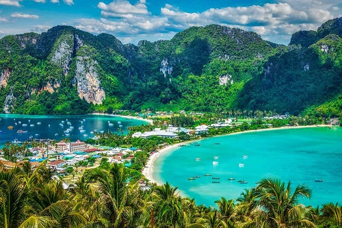

More information about Phuket (province)
Anyone who thinks that a vacation in Phuket consists of just beaches, beaches, and more beaches is going to be pleasantly surprised. The island has a rich heritage that’s shown through the prism of its temples, Sino-colonial architecture and old town – all worth visiting.
Nature abounds in Phuket and there are still some beautiful spots to visit and admire the views. Surrounded by the Andaman Sea, you can observe some of the local wildlife on a snorkelling trip or stay on land with a visit to one of Phuket’s aquariums.
What to do in Phuket
Phuket Island is a paradise for water sports lovers. The area is well known to scuba enthusiasts but lesser-recognised water activities such a sea kayaking and kite surfing are growing in popularity.
The gentle tides and calm waters from November to April are perfect for snorkelling, while the wild and rough waves from May to October are great for surfers. Phuket has several stunning viewpoints for that golden sunset moment, especially along the southern coast of the island. Whether it’s snorkelling, mini-golf or cable waterskiing you’re sure to find an activity to your taste. If not, there’s always sunbathing...
3 Best Tours in Phuket
- Phi Phi Islands tour by speedboat.
- Sea kayaking in Phang Nga Bay.
- Phi Phi by express ferry boat.
3 Great Night Markets in Phuket
- Chillva Market.
- Phuket Weekend Market.
- Phuket Walking Street.
10 Best Thai Food in Phuket
- Tom yum goong
- Pad Thai
- Kuay tiew (noodle soup)
- Som tam.
- Gai pad med ma muang (stir-fried chicken with cashew nuts)
- Geng kheaw wan gai (green curry chicken)
- Tom kha gai
- Kao phad (fried rice)
- Kao phad (fried rice)
- Khao man gai (steamed chicken rice)
3 Fun Things Kids Can Do in Phuket
- Phuket Trickeye Museum
-
The Phuket Trickeye Museum is an interactive 3D painting exhibition offering amazing photo opportunities and great fun for the whole family. Located on the corner of Montri and Phang Nga roads, the 2-storey venue has a gallery of about 100 painted and sculpted scenes using trompe-l’oeil (French for ‘deceive the eye’) techniques, placing you in hilariously unreal yet lifelike situations.
- Baan Teelanka
-
Baan Teelanka is an upside-down house, with all of the tables, chairs and typical furnishings on the roof instead of the floor. The whole 3-storey house is built leaning on its roof, making for some really cool family photos. You can find it on Bypass Road, on the northern outskirts of Phuket Town.
- Surf House Phuket
-
Surf House Phuket is a place where you can ride the waves every day, regardless of the weather. This surfing centre is suitable for all ages, from children to adults.
With an adjacent bar and restaurant, grown-ups can enjoy the cool, laidback atmosphere and the excellent location right at the southern end of Kata Beach Road while the kids try some flow riding under expert supervision and tuition.
Phuket
Phuket is blessed with more than 30 amazing beaches to choose from. Patong Beach, Kata, Karon and Kamala have always been the most popular, but the north of the island reveals some hidden gems for travellers searching for a more romantic atmosphere.via: hotels.com